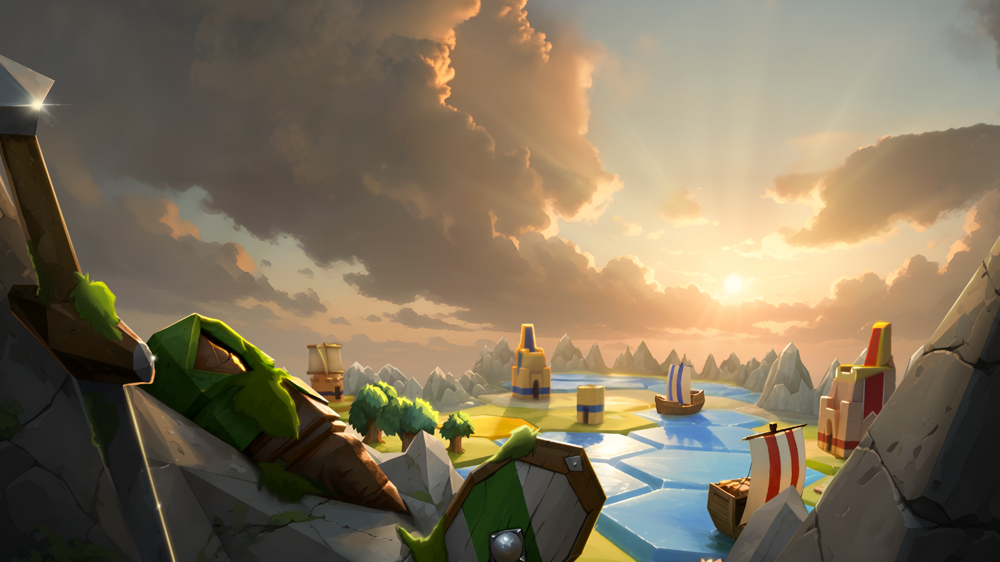

Featured Game
Kingdom of Krawall
One bold game stage with a trailer, features, and screenshot gallery.
Jump to GamesTiny Dragon Magic
Featured Game
One bold game stage with a trailer, features, and screenshot gallery.
Jump to GamesStreams
...
Jump to StreamsFeatured Offer
One calmer offer stage built for trust, clarity, and developer support.
Jump to MentoringA short pitch for the game goes here. Keep this area focused on the main hook, atmosphere, and what makes the project worth following.

Describe the first standout system, loop, or emotional hook.
Describe the second standout aspect players should know about.
Describe the third major strength of the game experience.


Use this slot to frame your Twitch presence around building games in public, sharing decisions, and inviting people into the development process.
Stream visual or channel artwork
Show what you are making, what changed, and what is currently being explored.
Explain systems, decisions, experiments, and the messy reality of development.
Create a home for players and fellow developers who want to follow the journey.
Use this space for the core promise of the mentoring offer, including who it helps and what kind of transformation or support people can expect.
Mentoring hero image
Define the type of strategic or creative clarity the offer provides.
Explain how the mentoring helps developers move their project forward.
Describe the practical support or knowledge that makes the offer valuable.
Contact
Keep this area ready for final contact details. E-mail is the primary channel and Discord is the secondary option.
primary-contact@example.com
discord-handle-placeholder
Socials
Follow the studio